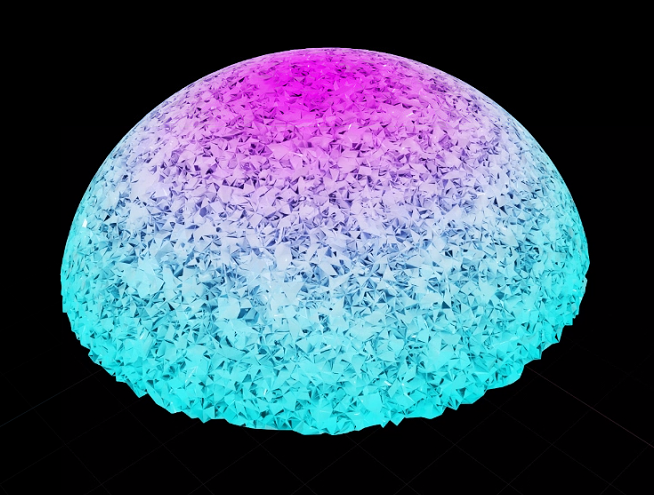

SimMaterial: Evaluating Materials through Differentiable Simulations
Thesis and potential submission to SIGGRAPH Asia
Through modern differential simulators, it is now possible to backsolve deformations of objects for their material configurations. We leverage gaussians to track point deformations of non rigid material using sparse views and use them to FEM dynamics and volumetric material properities.
Computer Vision
Graphics
Simulation